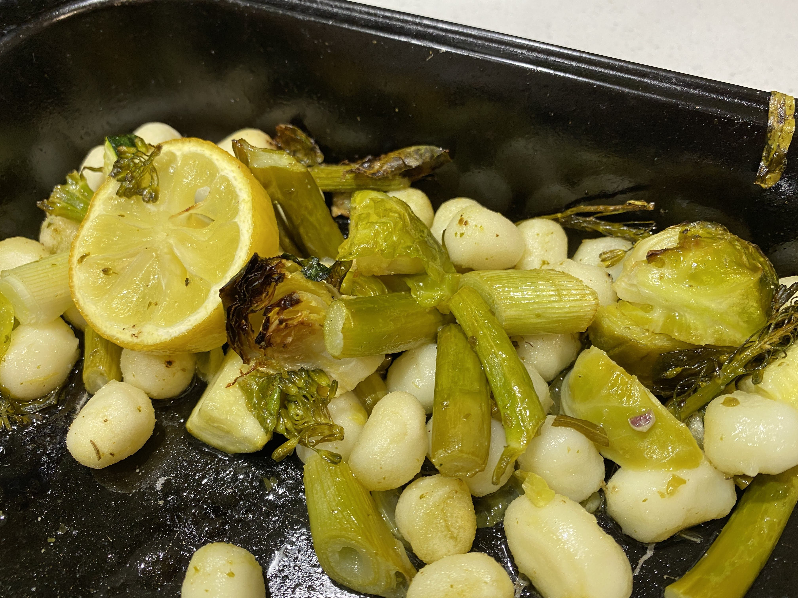

Lemon Gnocchi Traybake
 Meat
Meat

Preheat oven to 220 degrees
Grease oven tray
1 bunchbrocclini10-15brussel sprouts
Trim ends of brocclini and brussel sprouts, place in tray
1lemon
Slice half of a lemon and place in tray
someolive oilsomesalt and @pepper and @basil or parsley leaves
Add the remaining half of lemon juice, to olive oil, salt and @pepper and @basil or parsley leaves to jug
some1 packet fresh gnocchi
Pour mixture over 1 packet fresh gnocchi and toss
Bake in oven for 30 mins
Serve with fresh avocado and cheese